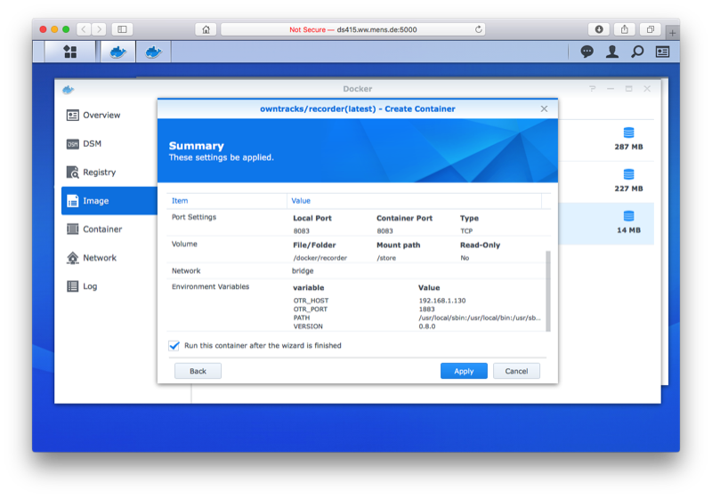
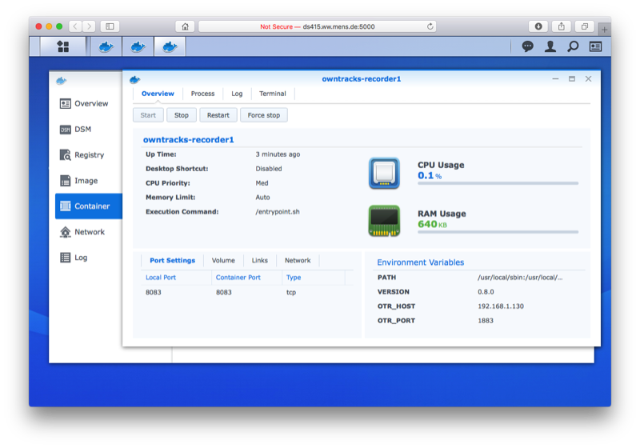
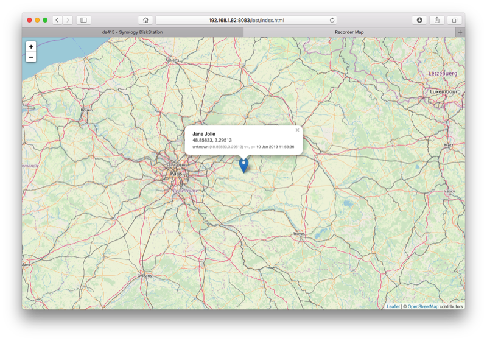

Recorder
The OwnTracks Recorder is a lightweight program for storing and accessing location data published via MQTT by the OwnTracks apps. It is a compiled program which is easily to install and operate even on low-end hardware, and it doesn't require an external database.
Docker
We have a multi-architecture Docker image which you can use to launch the Recorder. The image expects a volume which you mount into it into which it will write persistent data. You pass environment variables into the container to configure it.
This is documented on the docker-recorder repository.
Recorder on Synology
After installing Docker on your compatible Synology DiskStation, click on Image and Add the Recorder image from the URL https://hub.docker.com/r/owntracks/recorder; you do not have to specify a username/password. Select latest when prompted to choose a tag.
In list of images you should then see one called owntracks/recorder:latest as shown below.

Then, click on Launch in the same window, select a container name (or leave it as owntracks-recorder1) and click on Advanced Settings.
- Under Volume, add a folder. Select a folder you created and have reserved for the recorder, and associate (mount) that folder onto the
/storemount path. - Under Port Settings, ensure Local Port
8083is mapped to Container Port8083; you will have to replaceAutoby8083. - Under Environment, add two variables:
OTR_HOSTwith the address or host name of your MQTT broker andOTR_PORTwith its port number (typically1883). If you need authentication, check the Recorder documentation for further variables you can set to configure that.
Just before running the container, you should see something like this with the settings you specified:

When you launch the container, it will show up in the Container tab:

You should then be able to access the Recorder's Web interface at the address of your Synology DiskStation and the port 8083 you specified above.

Upgrades to the container running on your Synology DiskStation are easily done from the command line:
$ docker stop owntracks-recorder1
$ docker pull owntracks/recorder:latest
$ docker start owntracks-recorder1